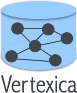

|
 End users increasingly want to perform the graph analytics directly with the relational engine, instead of moving data back and forth to a dedicated graph system. Furthermore, there is a need to combine relational analytics (OLAP) with graph analytics for end-to-end graph processing workflows. The goal of this project is to develop tools and techniques for efficient in-database graph analytics. We started with comparing different systems for graph analysis and our results show that column stores, when properly tuned and when executing carefully written queries, can provide very good performance, competitive to dedicated graph stores. Then, we looked at the ease-of-use of doing graph analytics in relational databases. Given that it is awkward to express graph queries in SQL, we proposed two alternatives: (i) a vertex-centric query interface, which is a popular query language for graph analytics, and (ii) a new language called GRAPHiQL, which hits the middle ground between declarative- and procedural-style languages and allows developers to combine both the table and the graph operations. Finally, we are looking to provide better support for iterations. Publications
Talks and Blogs
|